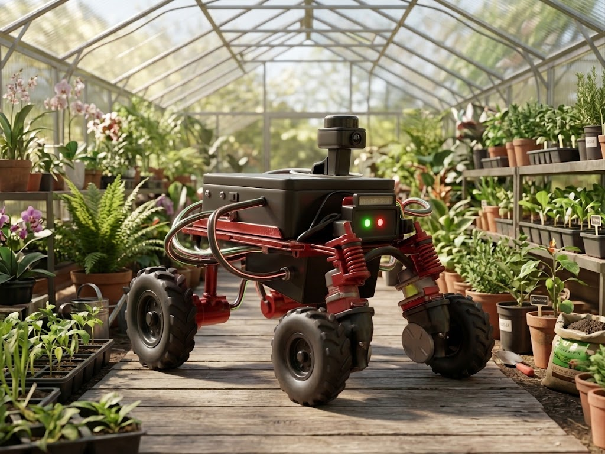

Temperatura °C
— °C
El panel reúne telemetría ambiental, calidad del enlace LoRaWAN y trazabilidad de los paquetes recibidos por la Raspberry Pi.

Una interfaz para observar variables, reconocer datos desactualizados y relacionar cada lectura con el estado de la red.
Últimas lecturas válidas recibidas
Indicadores incluidos en el paquete recibido
La potencia, la relación señal/ruido y la antigüedad describen aspectos distintos. Una lectura antigua se marcará como obsoleta aunque conserve un valor numérico.
Capas físicas y de software verificadas en el sistema
Mide variables y genera un mensaje LoRaWAN.
Recibe el mensaje y lo reenvía a la red IP. Dirección local: 192.168.0.11.
ChirpStack recibe el tráfico en UDP 1700; el backend conserva el histórico. IP: 192.168.0.20.
Presenta lecturas, estado y eventos en el puerto 8092.
Cada variable debe mostrarse con unidad, procedencia y validez. Un número sin contexto puede llevar a una interpretación incorrecta.
Magnitud térmica del aire registrada por el sensor. En el backend corresponde a tempSCD.
Proporción de vapor de agua respecto al máximo posible a esa temperatura; campo humidity.
Concentración expresada en partes por millón; campo co2. Las lecturas fuera de rango deben marcarse y no presentarse como válidas.
Potencia recibida de la señal. Un valor más negativo suele indicar una señal recibida más débil.
Relación entre señal y ruido recibidos. Se interpreta junto con RSSI y el factor de dispersión.
Factor de dispersión usado por LoRa. Ayuda a interpretar tiempo en aire y robustez del enlace.
Consulta la telemetría almacenada en la Raspberry Pi y exporta los registros para análisis. Los valores fuera de rango se identifican de forma explícita.
Fecha, mediciones y calidad de recepción por paquete
| Fecha y hora | Estado | Temperatura | Humedad | CO₂ | RSSI | SNR |
|---|---|---|---|---|---|---|
| Cargando registros… | ||||||
Consulta la configuración y el historial de notificaciones del servicio Telegram que corre en la Raspberry Pi.
Consultando servicio…
Conectando—
—
—
Activa o silencia cada categoría de eventos que puede notificar la Pi.
Estas acciones operan sobre el servicio real. Requieren conexión a Internet para enviar mensajes.
Resultado informado por Telegram para cada intento.
Selecciona un mensaje, revisa su payload y solicita el envío a ChirpStack. El resultado del servidor y la evidencia de ejecución se presentan por separado.
Catálogo disponible en el servidor de la Pi.
Código reservado para solicitar una parada de emergencia.
{ "command": "EMERGENCY_STOP" }El operador selecciona un código y pide el envío.
La respuesta ok indica si la API de ChirpStack aceptó la solicitud.
Requiere evidencia adicional. El backend actual no la registra en la bitácora de downlinks.